THE WORLD
평범한 아이들이 빛을 찾는 이야기
Miracle Shot은 특별한 영웅이 태어나는 이야기가 아니라, 남들과 조금 다르다는 이유로 소외받던 아이들이 서로의 다름을 받아들이고 공동체 안에서 자신의 재능을 발견해가는 이야기입니다. 좁은 풋살 코트에서 아이들은 경쟁자가 아니라 서로의 가능성을 발견하게 하는 동료가 됩니다.
FOUR KIDS, ONE MIRACLE
남들과 조금 다르다는 이유로 소외받던 평범한 아이들이 풋살 공동체를 통해
자신만의 진짜 빛과 하나님이 주신 달란트를 발견해가는 성장 드라마입니다.
과거의 영광을 잃고 방과 후 체육 교실마저 폐지될 위기에 놓인 이 코치는
전국 유소년 풋살대회 우승을 목표로 오합지졸 아이들을 모으기 시작합니다.
Miracle Shot은 특별한 영웅이 태어나는 이야기가 아니라, 남들과 조금 다르다는 이유로 소외받던 아이들이 서로의 다름을 받아들이고 공동체 안에서 자신의 재능을 발견해가는 이야기입니다. 좁은 풋살 코트에서 아이들은 경쟁자가 아니라 서로의 가능성을 발견하게 하는 동료가 됩니다.
한때 국가대표까지 바라보던 이 코치는 부상과 실패를 겪고 비정규직 강사로 살아갑니다. 해고와 체육교실 폐지라는 절망 앞에서 기도하던 어느 날, 창문으로 날아든 전국 유소년 풋살대회 전단지를 발견합니다.
이 코치는 각자의 결핍과 재능을 가진 황, 길, 고, 영을 차례로 발견합니다. 첫 훈련 날에는 길이 사방을 뛰고, 황이 슛으로 유리창을 깨고, 고는 책을 읽고, 영은 과자를 먹습니다. 혼돈 속에서 팀의 첫 호루라기가 울립니다.
한때 국가대표까지 지낸 유망주였지만 부상과 실패로 패배자가 된 비정규직 강사. 절망 속에서 기도하며 풋살대회를 발견하고, 성경 인물들의 지혜를 빌려 아이들의 숨은 가능성을 바라보기 시작합니다.
아이들을 대신 빛나게 하는 영웅이 아니라, 아이들 안에 이미 있는 빛을 발견하도록 돕는 멘토입니다.
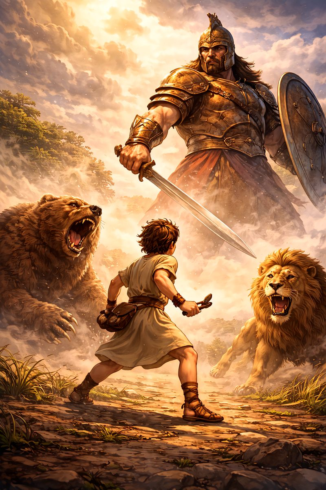
왜소한 체격 때문에 무시당하지만 벽에 대고 수없이 공을 차며 엄청난 슈팅 파워를 기른 소년입니다.
작지만 준비된 다윗처럼, 황은 자신의 약점을 핑계 삼지 않고 보이지 않는 곳에서 자신의 달란트를 갈고닦습니다.
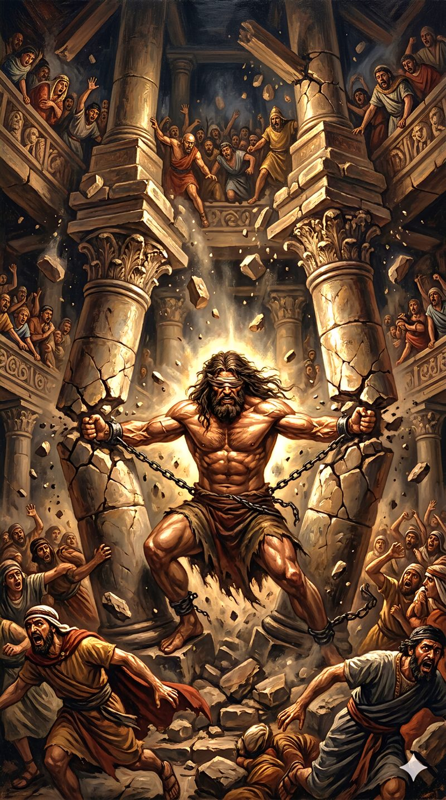
통제 불능의 엄청난 스피드를 가진 산만한 아이. 넘치는 에너지를 올바른 곳에 쏟을 목적지를 찾아갑니다.
삼손처럼 넘치는 힘과 에너지가 방향을 잃으면 문제가 되지만, 올바른 목적을 만났을 때 강력한 쓰임이 될 수 있습니다.
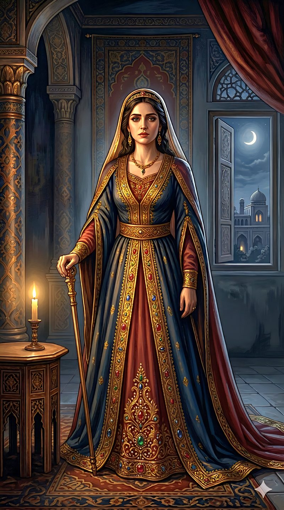
뛰어난 동체시력과 패스 센스를 가졌지만 과거 계주에서의 실수로 인한 트라우마 때문에 결정적인 순간을 두려워합니다.
에스더처럼 동료를 믿고 두려움 속에서도 한 걸음 나아가는 용기를 배웁니다.
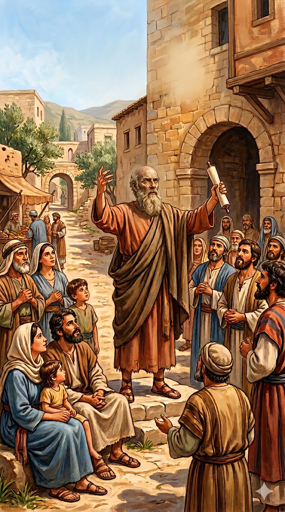
거대한 체격과 힘을 가졌지만 과거 실수로 친구를 다치게 한 뒤 자신을 움츠리고 사는 다정한 소년입니다.
바울처럼 자신의 힘을 남을 해치는 데 쓰지 않고, 소중한 것을 지키는 방패로 사용하기로 결심합니다.
STORY THEMES · CHARACTER JOURNEY
Miracle Shot은 풋살 경기에서 이기는 과정만을 다루는 스포츠 이야기가 아닙니다. 이야기의 출발점은 남들과 조금 다르다는 이유로 소외된 아이들이며, 이들을 모으는 이 코치 역시 부상과 실패 이후 자신의 자리를 잃어버린 사람입니다. 코치와 아이들은 서로를 일방적으로 구원하는 관계가 아니라, 각자의 부족함을 마주하며 함께 성장하는 팀을 만들어 갑니다.
한때 국가대표를 꿈꾸던 이 코치는 부상과 좌절을 겪고 비정규직 강사가 됩니다. 체육교실마저 사라질 위기에서 대회 전단지를 발견한 것은 모든 문제가 해결됐다는 뜻이 아니라, 다시 시도할 수 있는 작은 기회가 생겼다는 뜻입니다. 코치의 역할은 아이들을 자신의 방식대로 바꾸는 것이 아니라, 아직 드러나지 않은 가능성을 발견하고 그 가능성이 자랄 자리를 만드는 것입니다.
황은 작은 체격 때문에 무시당하지만 보이지 않는 곳에서 슈팅을 연습해 왔습니다. 길의 빠른 움직임, 고가 책에 몰두하는 모습, 영이 간식을 즐기는 모습은 첫 훈련을 혼란스럽게 만들지만, 이 장면은 아이들이 처음부터 완성된 선수로 모인 것이 아님을 보여줍니다. 팀이 된다는 것은 모두가 같은 성격과 방식으로 행동하는 것이 아니라, 서로 다른 특징을 알아보고 경기 안에서 의미 있는 역할을 찾는 과정입니다.
작품은 아이들의 재능을 성경 속 인물과 연결해 살펴봅니다. 황과 다윗의 연결은 겉으로 보이는 크기보다 준비와 용기가 중요하다는 점을 떠올리게 합니다. 이 연결은 아이들을 성경 인물과 똑같이 만들려는 장치가 아니라, 익숙한 이야기를 통해 각자의 가능성과 선택을 새롭게 생각하도록 돕는 틀입니다. 신앙은 경기 결과를 보장하는 마법이 아니라, 실패와 두려움을 대하는 태도와 공동체의 책임을 돌아보게 하는 주제입니다.
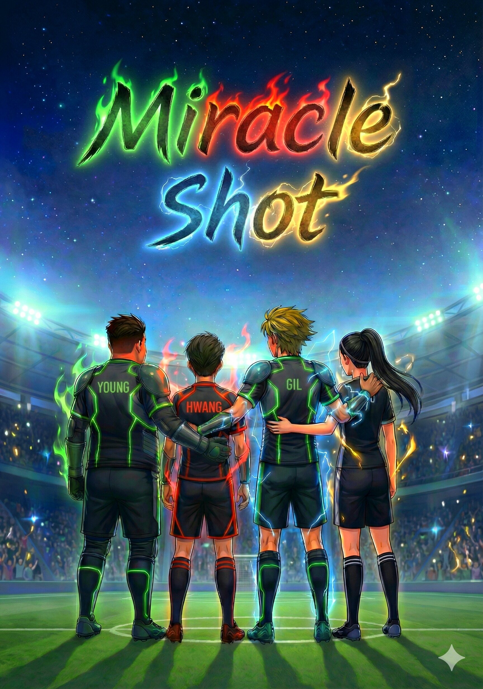
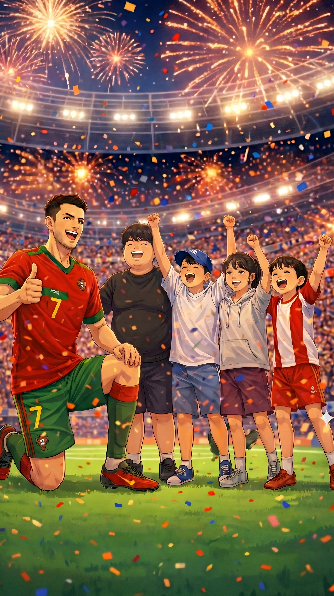
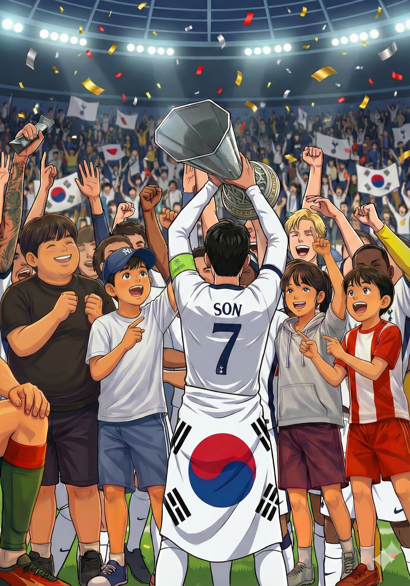
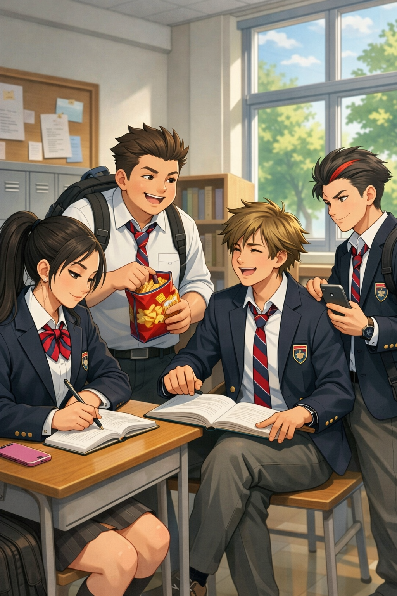
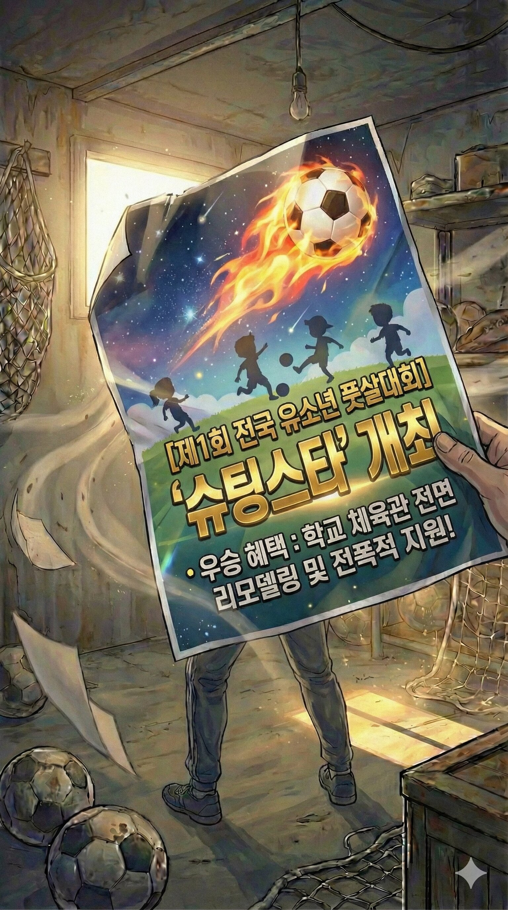
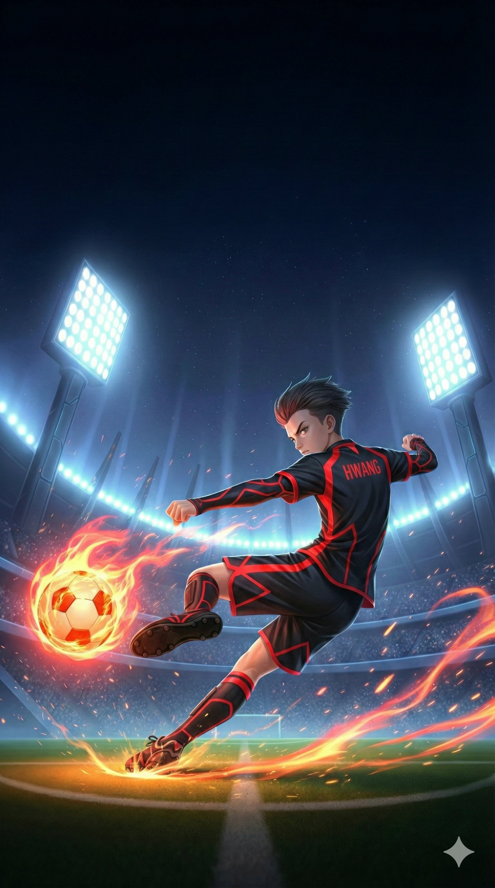
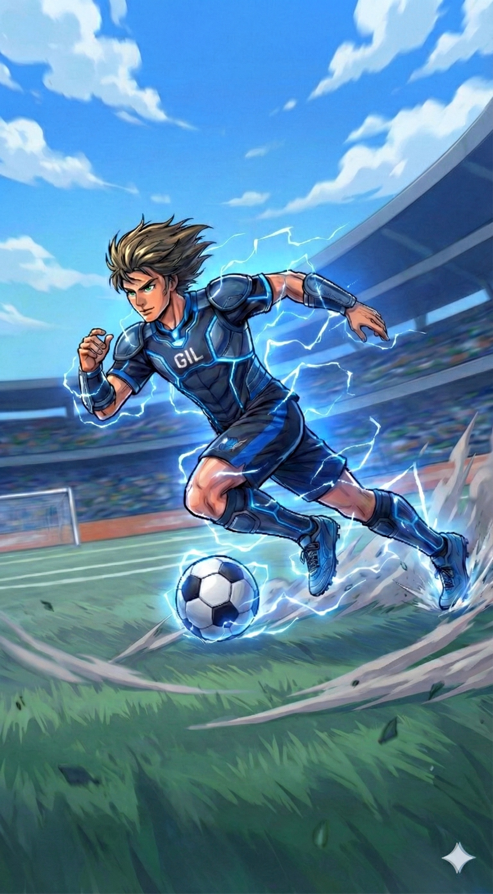
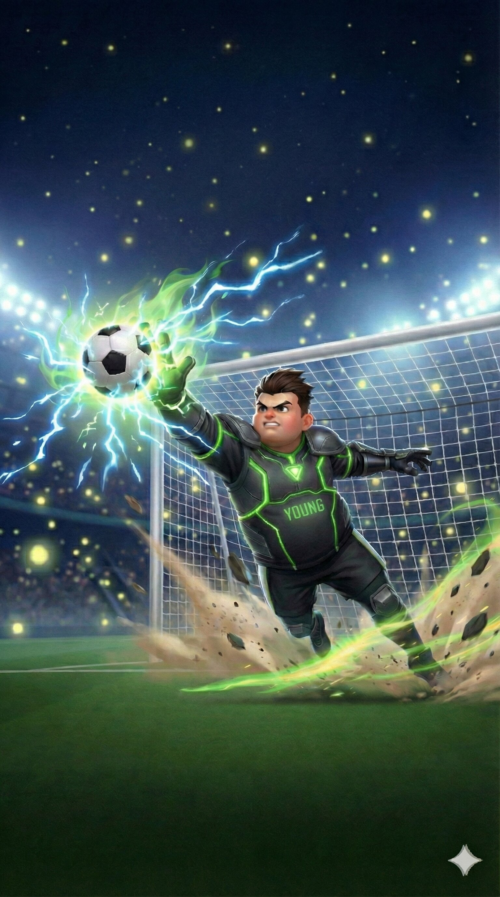

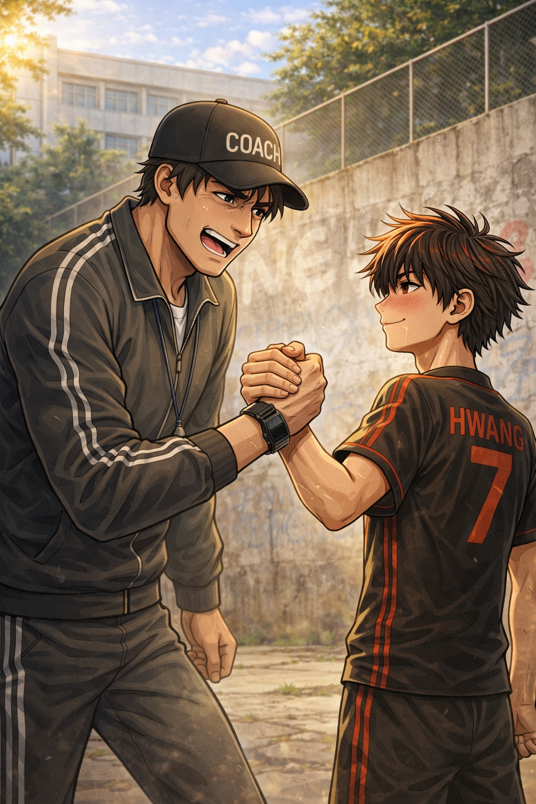

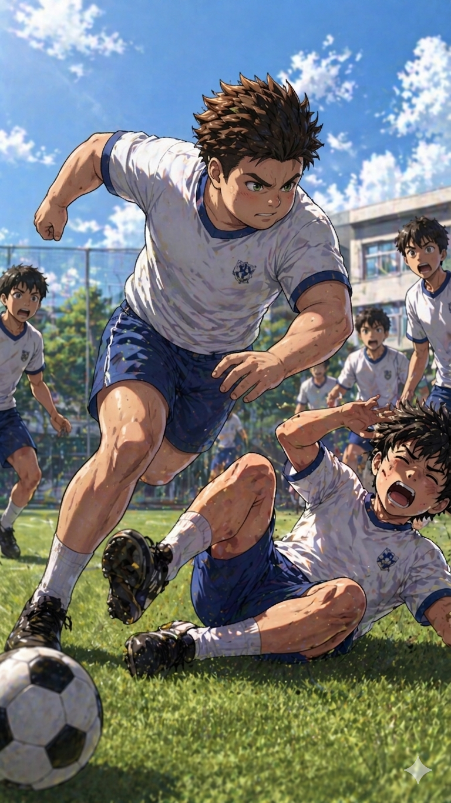
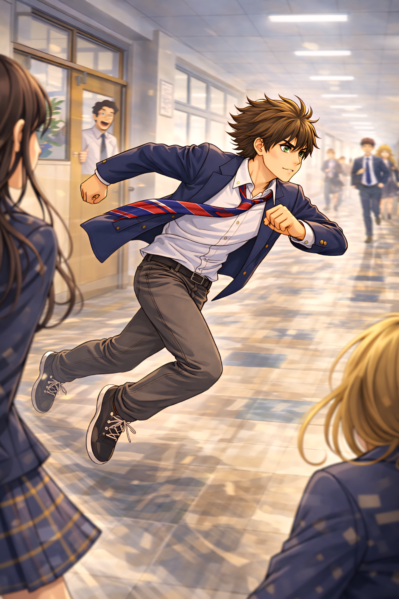
Miracle Shot의 세계관을 음악으로 확장한 5곡의 오리지널 사운드트랙입니다. 네 아이의 달란트와 성장, 그리고 함께 만들어가는 기적을 담았습니다.
누구나 밤하늘의 별처럼 고유한 빛과 하나님이 주신 달란트를 가지고 태어납니다. 때로는 그 빛이 흐리거나 남들과 어울리는 법을 몰라 방황할 수 있지만, 자신을 알아봐 주는 멘토와 서로를 믿는 공동체 안에서 진짜 빛을 발견할 수 있다는 희망을 담았습니다.
이 코치는 해고와 체육교실 폐지라는 절망 속에서 기도하고, 기적처럼 날아온 풋살대회 전단지를 발견합니다. 이후 황, 길, 고, 영을 차례로 만나 각자의 상처와 재능을 발견하고 팀으로 모읍니다. 제공된 원고는 네 아이가 팀으로 결성되어 처음 만나는 장면까지의 이야기를 담고 있습니다.
황은 작지만 준비된 다윗의 믿음을, 길은 넘치는 힘을 올바른 목적에 사용하는 삼손의 이야기를, 고는 두려움 속에서도 공동체를 위해 나아간 에스더의 용기를, 영은 자신의 힘을 지키는 데 사용한 바울의 변화를 떠올리게 합니다. 이 연결은 아이들을 성경 인물과 동일시하는 것이 아니라, 각자의 성장에 필요한 지혜를 보여주는 장치입니다.
좁은 코트 안에서 네 명이 계속 서로에게 공을 맡기고 다시 받아야 하는 풋살은, 혼자서는 완성될 수 없는 공동체의 모습을 가장 잘 보여줍니다. 아이들 사역을 하며 느꼈던 서로 다른 아이들이 한 팀이 될 때 만들어지는 기적 같은 순간을 이 이야기에 담고 싶었습니다.
Chris LEE.PAPA는 아이들의 성장과 공동체의 의미를 풋살이라는 언어로 풀어낸 Miracle Shot 오리지널 IP를 창작했습니다. 이 작품은 실패해도 다시 일어서는 아이들의 용기와, 자신 안의 빛을 발견하도록 돕는 멘토와 팀의 이야기를 담고 있습니다.